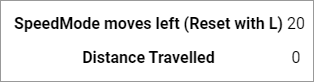

PassPath uses a path chosen by the user to authenticate them with the given system.
It uses google maps street view api which provides a recognisable and comfortable environment to choose a route anywhere in the world.
PassPath then stores this route as your way of authenticating with the given system.
When that same user wants to access the system they simply need to repeat the route they initially gave the system.
| Will take you back to the location where you clicked start and allow you to reposition the start of your PassPath. | |
| Will reset your PassPath attempt and allow you to enter a different name and a completely different PassPath. It does the same as refreshing the browser. | |
| Will toggle "Speed Mode" which will take you down a road until you meet a junction or until you run out of Speed Mode moves. | |
|  | This section shows you how many metres you have travelled and how many Speed Mode moves you have left - You can reset the moves by pressing L. |